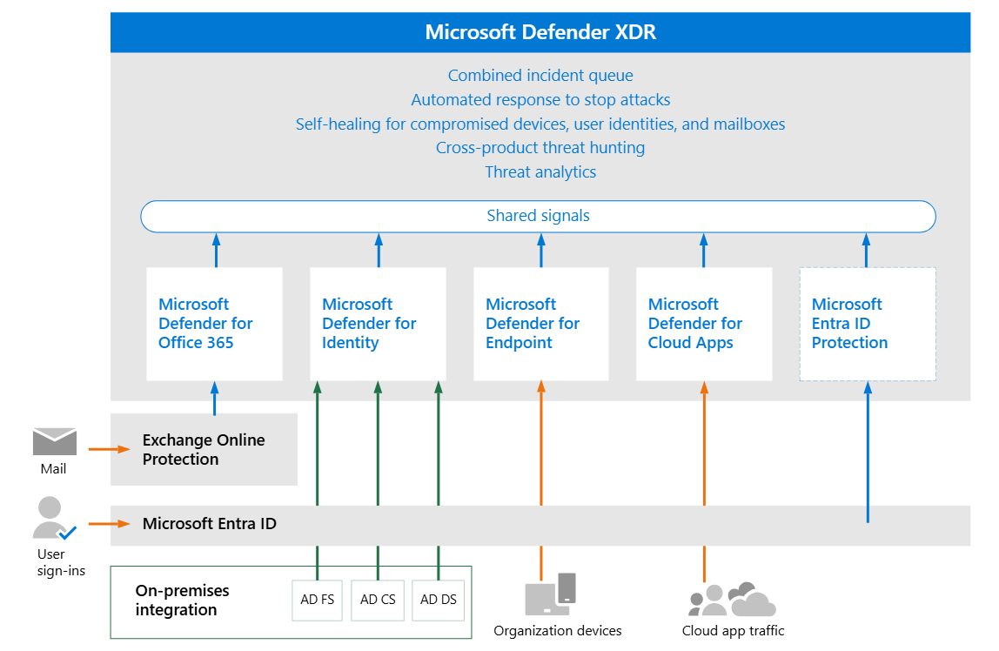
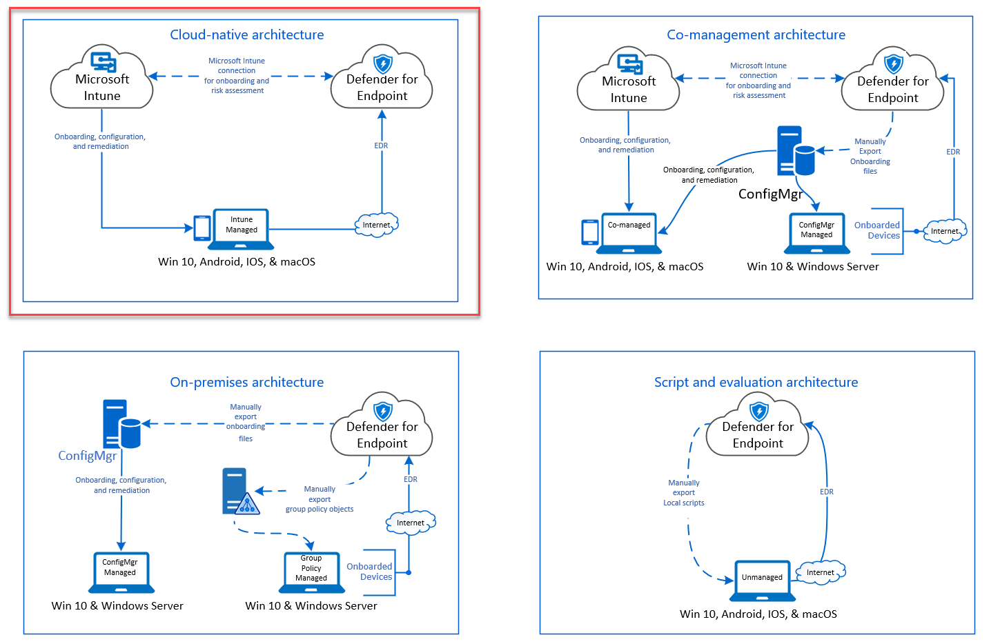
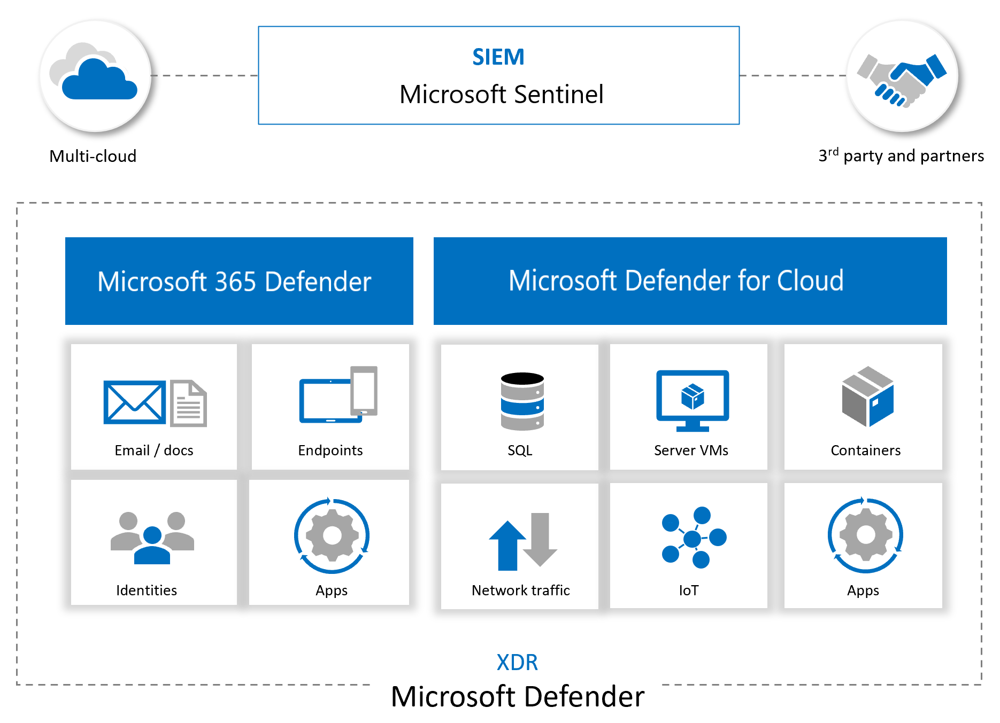

about
This is basically note on how to setup, work with and improve microsoft defender suite I steal a lot of this from GSD, a very comprehensive guide!
more stuff on ms. entra and ms. purview
high level stuff
graph LR
A[MDE] --> |detect app|B[MDCA]
B --> |via XDR|C[sentinel]
A --> |via XDR|C
B --> |govern app|A| assets | govern | identify | protect | detect | respond | recover |
|---|---|---|---|---|---|---|
| identity | MDI | MDI, CA | MDI | MDI | ||
| endpoint | MDE | MDE | MDE | MDE | ||
| cloud | MDCA policy | MDCA, MDE | MDCA, MDE | MDCA, MDE | ||
| apps | ||||||
stuff to learn
- [ ] try azure
- [ ] az 500 microsoft or microsoft or this roadmap?
- [ ] try ms graph https://www.youtube.com/watch?v=9qIgyYLjHnU
- [ ] try purview
- [ ] read purview, MIP
- [ ] read MDI, MDE, MDO
- [ ] find baseline for azure
- [ ] read azure vs aws https://nira.com/aws-security-vs-azure-security/#:~:text=AWS%20and%20Azure%20are%20almost,services%20and%20options%20than%20Azure. https://www.aquasec.com/cloud-native-academy/cspm/azure-security-vs-aws-security/ https://www.wiz.io/academy/azure-security-vs-aws-security https://medium.com/@leasepacket/aws-security-vs-azure-security-a-comprehensive-cloud-security-comparison-1b182104c40e
- [ ] a bunch of youtube https://www.youtube.com/watch?v=7jUSFpsKj1E https://www.youtube.com/watch?v=WyGm28gHp3M https://www.youtube.com/watch?v=L5N9S8pKpOw
- [ ] sending logs https://www.youtube.com/watch?v=BLqNvaF5nXg
azure and sentinel
XDR
also see high level above

capabilities
unified alert from various platform. deception in XDR
MDI
what
if you have domain controller, install MDI sensor. Defender for Identity uses data from across your environment, including domain controllers, Active Directory Federation Services (AD FS), and Active Directory Certificate services (AD CS), to provide you with a complete view of your identity environment.
full list of alert here
setup
from dcaddick prereq, plan, sizing tool, service account, download and install sensor, last config.
for adfs
validate
select Settings > Identities > check if all DC have MDI sensors. validate sensor instlal common error: Directory Services Object Auditing is not configured as required: https://aka.ms/mdi/objectauditing
work with
how to investigate the alert and remediate aside from that also available reports
improve
hardened MDI, and better your posture
MDE
what
end point protection. aside from server
setup
prepare mde
- Check license state: check license from azure portal license, or billing > subscription
- Cloud Service Provider validation: check which license is provisioned and the state of the license. CSP is MS partner that help you when you buy MS product.
- Tenant Configuration: Initiate Microsoft Defender for Endpoint tenant
- Data center location: Microsoft Defender for Endpoint stores and process data in the XDR
- Network configuration: follow the steps to ensure access to MDE
good resource on MDE settings explanation and advice
role & permission
how to assign role is here and here. least privilege principles when assigning role.
architecture & deployment method
Identify your architecture and choose your deployment method: Identify your architecture and the deployment method that best suits your organization. pdf guide here depends on how you are setup, below is the recommended deployment. in short: use Intune if you are cloud native. use config manager if you are hybrid or on-prem. or use a local script if you do not manage your device.

onboard device
onboard device by first choosing method, use the ring approach method, based your previous step/ architecture. among others are Intune and config manager
also deployment in linux
validate
check it is working with scenarios and test with demo
work with
improve
set up automated investigation and response - AIR set up attack surface reduction rules (ASR rules), and see the report, improve upon it. see MDE device health report and fix unhealthy sensors see MDE device firewall report
MDCA
what
It's a Cloud Access Security Broker (CASB) solution. focuses on SaaS application security and user behaviors.
setup
- prereq: you must at least be a Security Administrator in Microsoft Entra ID or Microsoft 365
- RBAC for admins needed? manage admin
- connect cloud apps
- set up DLP
- set up policy
- set up cloud discovery
- organize data with tags and IP address
- daily activities to increase posture
- best practice
best practice
- Discover and assess cloud apps
- Apply cloud governance policies
- Limit exposure of shared data and enforce collaboration policies
- Discover, classify, label, and protect regulated and sensitive data stored in the cloud
- Enforce DLP and compliance policies for data stored in the cloud
- Block and protect download of sensitive data to unmanaged or risky devices
- Secure collaboration with external users by enforcing real-time session controls
- Detect cloud threats, compromised accounts, malicious insiders, and ransomware
- Use the audit trail of activities for forensic investigations
- Secure IaaS services and custom apps
connect apps
this is basically posture assessment using MDCA for SaaS. see also MDC (more appropriate for azure infra as opposed to SaaS)
workflow: 1. Defender for Cloud Apps scans and saves authentication permissions. 2. Defender for Cloud Apps requests the user list. The first time the request is done, it may take some time until the scan completes. After the user scan is over, Defender for Cloud Apps moves on to activities and files. As soon as the scan starts, some activities will be available in Defender for Cloud Apps. 3. After completion of the user request, Defender for Cloud Apps periodically scans users, groups, activities, and files. All activities will be available after the first full scan.
capabilities (depends on CSP): - Account information - Visibility into users, accounts, profile information, status (suspended, active, disabled) groups, and privileges. - Audit trail - Visibility into user activities, admin activities, sign-in activities. - Account governance - Ability to suspend users, revoke passwords, etc. - App permissions - Visibility into issued tokens and their permissions. - App permission governance - Ability to remove tokens. - Data scan - Scanning of unstructured data using two processes -periodically (every 12 hours) and in real-time scan (triggered each time a change is detected). - Data governance - Ability to quarantine files, including files in trash, and overwrite files.
how to here
set up dlp
read on file policies and purview below
set up cloud discovery
you can set up MDCA to discover apps, guide here
Cloud discovery analyzes your traffic logs against the Microsoft Defender for Cloud Apps catalog of over 31,000 cloud apps.
you can have snapshot (one time upload of your traffic to be analyzed) or continuous report (use log collector, connector or cloud API to continuously upload).
set up policies
Policies allow you to define the way you want your users to behave in the cloud. If necessary, you can integrate remediation work flows to achieve complete risk mitigation. The following types of policies can be created:
| Policy type icon | Policy type | Category | Use |
|---|---|---|---|
 |
Activity policy | Threat detection | Activity policies allow you to enforce a wide range of automated processes using the app provider's APIs. These policies enable you to monitor specific activities carried out by various users, or follow unexpectedly high rates of a certain type of activity. Learn more |
 |
Anomaly detection policy | Threat detection | Anomaly detection policies enable you to look for unusual activities on your cloud. Detection is based on the risk factors you set to alert you when something happens that is different from the baseline of your organization or from the user's regular activity. Learn more |
 |
OAuth app policy | Threat detection | OAuth app policies enable you to investigate which permissions each OAuth app requested and automatically approve or revoke it. These are built-in policies that come with Defender for Cloud Apps and can't be created. Learn more |
 |
Malware detection policy | Threat detection | Malware detection policies enable you to identify malicious files in your cloud storage and automatically approve or revoke it. This is a built-in policy that comes with Defender for Cloud Apps and can't be created. Learn more |
 |
File policy/ DLP | Information protection | File policies enable you to scan your cloud apps for specified files or file types (shared, shared with external domains), data (proprietary information, personal data, credit card information, and other types of data) and apply governance actions to the files (governance actions are cloud-app specific). Learn more |
 |
Access policy | Conditional Access | Access policies provide you with real-time monitoring and control over user logins to your cloud apps. Learn more |
|
Session policy | Conditional Access | Session policies provide you with real-time monitoring and control over user activity in your cloud apps. Learn more |
 |
App discovery policy | Shadow IT | App discovery policies enable you to set alerts that notify you when new apps are detected within your organization. Learn more |
| ###### activity policy | |||
| how to |
- To ensure that you only include results where the specified filter field has a value, we recommend adding the same field again using the is set test. For example, when filtering by Location does not equal a specified list of countries/regions, also add a filter for Location is set. You can also preview the filter results by selecting Edit and preview results.
- When a filter is set to does not equal and the attribute does not exist on the event, the event will not be filtered out. For example, filtering on Device Tag does not equal Microsoft Entra hybrid joined doesn't filter out events that do not contain Device tag, even if the device is Microsoft Entra joined.
- In case of a guest user, there may be cases where the User From Group filter doesn't recognize the account by its domain. To make sure all guest users are included, use the External users as the group, if it meets your needs for the policy.
file policy
how to You are limited to 50 file policies in Defender for Cloud Apps. also read common data protection policy
best practice 1. Avoid resetting the file policy (by using the Reset results and apply actions again checkbox) in production environments unless it's absolutely necessary, as doing so will initiate a full scan of the files covered by the policy, which can have a negative impact on its performance. 2. When applying labels to files in a specific parent folder and its subfolders, use the Apply to -> Selected folders option. Then add each of the parent folders. 3. When applying labels to files in a specific folder only (excluding any subfolders), use the file policy filter Parent Folder with the Equals operator. 4. File policy is faster when narrow filtering criteria are used (as compared to wide criteria). 5. Consolidate several file policies for the same service (such as SharePoint, OneDrive, Box, and so on) to a single policy. 6. When enabling file monitoring (from the Settings page), create at least one file policy. When no file policy exists, or is disabled for seven consecutive days, file monitoring is autodisabled.
integrating with other services
purview
Microsoft Defender for Cloud Apps lets you automatically apply sensitivity labels from Microsoft Purview. These labels are applied to files as a file policy governance action, and depending on the label configuration, can apply encryption for additional protection. You can also investigate files by filtering for the applied sensitivity label within Defender for Cloud Apps. Using labels enables greater visibility and control of your sensitive data in the cloud. how to
prerequisite - a Defender for Cloud Apps license and a license for Microsoft Purview. - To work with Microsoft Purview integration, you must enable the App connector for Microsoft 365.
MDE
summary: function as detect and protect for shadow IT/ unsanction app access through end point telemetry sent by MDE. prerequisite: MDCA and MDE license
how it work: detect - endpoint log sent to MDCA (device/user info, traffic) - check risky device/ user -> pivot using that user/ device or detected app - investigate and govern protect govern via MDE
how to: guide here
MDI
guide and capabilities here
work with
investigate threat investigate dashboard tune sus action risky oauth MDE investigation discover and govern Gen AI app: - The cloud app catalog now contains hundreds of new Generative AI apps that enable security teams to discover and understand the risk associated with each app. - Configure policies to automatically trigger alerts when new Generative AI apps are used within your organization. - For organizations using Defender for Endpoint integration, apps tagged as “unsanctioned” will be instantly blocked on onboarded devices. govern gen AI tutorial: youtube
improve
Investigate Apps discovered by MDE https://learn.microsoft.com/en-us/defender-cloud-apps/mde-investigation
Governance for Connected Apps https://learn.microsoft.com/en-us/defender-cloud-apps/governance-actions
Governance for discovered Apps https://learn.microsoft.com/en-us/defender-cloud-apps/governance-discovery Now we can take this one step further and we can now determine which of the 26,000 SaaS Apps I want to allow or block - the only real limitation (to a certain extent) is that the user is using corporate credentials from our AAD via an endpoint enabled with MDE
use it with gen AI
office 365 cloud app security vs MDCA
Office 365 Cloud App Security is a subset of Microsoft Defender for Cloud Apps that provides enhanced visibility and control for Office 365. source
| Capability | Feature | Microsoft Defender for Cloud Apps | Office 365 Cloud App Security |
|---|---|---|---|
| Cloud discovery | Discovered apps | 31,000 + cloud apps | 750+ cloud apps with similar functionality to Office 365 |
| Deployment for discovery analysis | - Manual upload - Automated upload - Log collector and API - Native Defender for Endpoint integration |
Manual log upload | |
| Log anonymization for user privacy | Yes | ||
| Access to full cloud app catalog | Yes | ||
| Cloud app risk assessment | Yes | ||
| Cloud usage analytics per app, user, IP address | Yes | ||
| Ongoing analytics & reporting | Yes | ||
| Anomaly detection for discovered apps | Yes | ||
| Information Protection | Data Loss Prevention (DLP) support | Cross-SaaS DLP and data sharing control | Uses existing Office DLP (available in Office E3 and above) |
| App permissions and ability to revoke access | Yes | Yes | |
| Policy setting and enforcement | Yes | ||
| Integration with Microsoft Purview | Yes | ||
| Integration with third-party DLP solutions | Yes | ||
| Threat Detection | Anomaly detection and behavioral analytics | For Cross-SaaS apps including Office 365 | For Office 365 apps |
| Manual and automatic alert remediation | Yes | Yes | |
| SIEM connector | Yes. Alerts and activity logs for cross-SaaS apps. | For Office 365 alerts only | |
| Integration to Microsoft Intelligent Security Graph | Yes | Yes | |
| Activity policies | Yes | Yes | |
| Conditional access app control | Real-time session monitoring and control | Any cloud and on-premises app | For Office 365 apps |
| Cloud Platform Security | Security configurations | For Azure, AWS, and GCP | For Azure |
| ### MDO |
Defender for Office
MIP
microsoft information protection
guides here
graph query, grap api, azure graph
so many graph
Azure Resource Graph: Azure Resource Graph - This is used for querying resources that exist in Microsoft Azure, and their basic properties GraphQL - GraphQL is an open source language used in applications for communication between the client and the server Microsoft Graph Security API - This is just one of the underlying APIs that targets a particular service via the Microsoft Graph,
Microsoft Cybersecurity Reference Architecture
these are from MCRA
adopting principles
- End to End Security: Consider the whole problem
- Ruthlessly Prioritize: Identify top gaps + quick wins
- Get started: Start somewhere & continuously improve
sentinel data lake
https://learn.microsoft.com/en-us/azure/sentinel/best-practices-data
purview
purview DLP insider risk ediscovery
https://setup.cloud.microsoft/purview
o365 security
https://learn.microsoft.com/en-us/microsoft-365/security/security-posture-solution-overview?view=o365-worldwide
https://www.youtube.com/watch?v=y7m-X8AGBlM
licensing and feature

m365map and m365matrix
https://infusedinnovations.com/blog/secure-modern-workplace/complete-office-365-and-microsoft-365-licensing-comparison
logs
expand here
Unified Audit Log (UAL) - The backbone of forensic investigations in Microsoft 365, capturing activity across Exchange, SharePoint, Teams, and more. → Sign-in & Audit Logs - Essential for tracking account takeovers, MFA bypass attempts, and privilege escalation. Defender for Office 365 - Analyzing phishing, email delivery, and malicious attachments. Defender XDR - Mapping user behavior, anomalies, and lateral movement.
aws security
native aws stuff
cloudtrail
guardduty
security hub
tooling for aws security
prowler
steampipe
XSIAM
https://www.youtube.com/watch?v=wqXsCMc5lzQ&list=PLBpoVs10QWXI_gjH5_gNAFDhl_dDwE0oR&index=1
reference-and-related
infosec-compendiums marks list GSD -> very good and complete steps jeffreyappel blog ms. entra and ms. purview